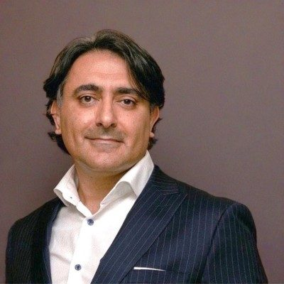
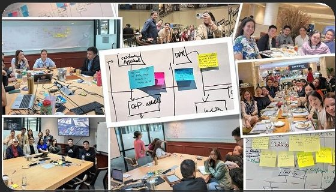
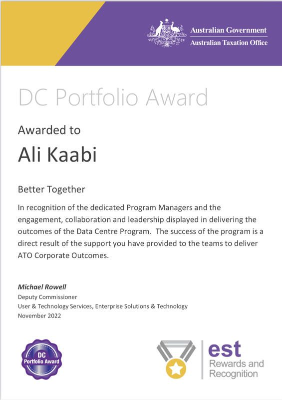

Ali Kaabi
Consulting practices. Enterprise programs. Investment governance.
Over twenty years across government, telecommunications, media, industrial, services and care. Consulting practices built, enterprise programs delivered, investment governance run, from inside the business and from the advisory side. Most recently Director at Rohling, leading the advisory front end and establishing the firm's AI practice.

Commercial results
A federal government practice built from nothing to a $35M+ P&L, 22% over gross profit target. Services revenue up 75% at MSC, with a further 250% from a vendor partnership. A 30% project margin KPI owned by each project manager.
Delivery
Finance, payroll, HR, CRM, clinical and asset systems delivered across national organisations. On-time and on-budget delivery from 42% to 79% across 87 concurrent projects at MSC. Project outcomes from 60% failure to 90% success at The Missing Link.
Governance and AI
An executive Investment Committee created and chaired across 25+ P&Ls. Portfolio methodology on P3O with P3M3 benchmarking. AI governance for aged care and community providers, aligned to the Aged Care Act 2024 and the Privacy Act.
Get the real numbers first.
Margin, delivery rate, cost to serve. In most organisations the reporting is there and the truth is not. I rebuild the reporting before I change anything else.
Give someone ownership of them.
At MSC I made each project manager accountable for a 30 percent margin, not just a date. Scope conversations with clients started earlier and problems came up while they were still cheap to fix.
Then build the method and the team.
Lifecycle, governance, templates, training, and a committee that decides what gets funded. Done in this order it works. Done the other way round it produces process and no idea whether you are making money.
Results
Measured the way each organisation measured it at the time.
Delivery turnarounds, before and after
Macquarie Government practice, 2021 to 2023
Secure Parking national program
Twenty years by sector
Projects and achievements
Eight organisations, most recent first. What I built and implemented at each, and the result. The teal marks are the items that mattered most.
Front end of the firm, program direction, and a new practice
- Strategy and platform selection. Strategy engagements that produced maturity assessments and the selection of SaaS platforms and implementation partners across CRM, client and clinical management, enterprise finance, HRIS and sales: Dynamics 365, Business Central, Salesforce, HubSpot, UKG and others. Board-ready strategy and program business cases, vendor selection and vetting, and the teams that implement them.
- AI practice. Founded on three pillars: client advisory and governance, internal capability, proprietary IP. A five-layer governance suite aligned to the strengthened Aged Care Quality Standards, Aged Care Act 2024, Privacy Act and national AI guidance; a seven-dimension maturity assessment; and the firm's AI-native operating model on Microsoft 365, SharePoint, Copilot Studio and Claude.
- Program direction. Program Director and escalation point on a multi-workstream enterprise program across finance, payroll, procurement, risk, CRM, clinical and asset management, from business case and board approval through delivery.
- RFPs and bids. Ran RFPs for clients to select the solution and the implementation partner, and responded to bids and won work for the firm's delivery teams.
- Commercial models. Strategic Delivery Partnership (fixed-rate, sponsor-backed, outcome-accountable) and Managed Technology Partnership. Resource cost model rebuilt for true project profitability.
- Practice standards. First OKR framework, portfolio reporting standards (PSR, SteerCo) across all engagements, and a consultant development framework.
Investment governance, enterprise systems, and an offshore redesign
- Executive Investment Committee. Created and chaired. Every capital and operating program approved, funded and held to account across 25+ P&Ls. Reported to the Japan-appointed Executive Director and worked with Park24 head office in Tokyo.
- National revenue and cost program. Dynamic pricing, digital channel and cost initiatives. Revenue up 2.1 to 6%, OPEX down 2.5 to 5%.
- Offshore operation transformation. 70+ FTE across CX, sales, complaints and finance in the Philippines: 20+ process workshops, future roles and process, live dashboards and KPI tracking, implementation across process, technology and people.
- Microsoft Dynamics (sales): RFP, vendor selection and deployment.
- HRIS: selection and deployment.
- TechnologyOne finance upgrade.
- Customer app and website relaunch.
- Hybrid enterprise PMO on the P3O framework with P3M3 maturity benchmarking: Agile for product, PMI for capital and transformation. Demand management, enterprise prioritisation, CAPEX governance.
- FY24/25 roadmap and transformation strategy for the Program Office.

A federal government practice, built from a standing start
- Professional services practice inside the government cyber security account. Established the consultancy and delivery pods across multiple states, across project services and recurring managed services revenue. $35M+ P&L, 350% growth, 125% of target, 22% over gross profit target.
- ATO Data Centre program. Portfolio delivery recognised with the DC Portfolio Award, one of two ATO recognitions.
- Cyber and network security transformation programs for federal agencies under the DCMT framework.
- DCMT professional services framework and the government capability statement.
- 66+ concurrent projects for federal and state agencies, with portfolio reporting to executives.
- Delivery pods across multiple states, a team of 30+ consultants, engineers and pre-sales architects.
- Planning and budget cycles (3+9, 6+6, annual) and executive strategy sessions.

Delivery turnaround and the firm's first commercial foundations
- Delivery turnaround. Project outcomes from a 60% failure rate to 90% success and profitability. Utilisation held above 80%.
- First formal PMO, delivery framework and governance.
- First OKR framework.
- First services catalogue with productised offerings, pricing structures and value propositions.
- Pre-sales governance and tender rules that lifted win rate and cut administrative effort.
- Solutions team: pre-sales, technical delivery and service design and development.
- Major enterprise programs led for enterprise customers with financial and capacity reporting.
Enterprise systems and the dashboard the executive ran on
- TechnologyOne Finance across the network.
- Enterprise transformation submission across HR, payroll and operations: gap analysis, business case, vendor selection, deployment scope.
- Office 365 rollout.
- HRIS and workforce management implementation.
- Single-source-of-truth monthly portfolio dashboard for project success across the business.
- Delivery Centre of Excellence, governance framework, benchmark reporting and methodology maturity model.
- Head office relocation, end user computing.
- Network-wide print (MFD and follow-me) rollout and Adobe deployment.
- Training and development plans for project managers and business analysts.
Professional services rebuilt from the ground up
- Transformation and growth of the practice. Built and expanded professional services from 11 to 22 people, with regional PMO branches under one framework and one set of KPIs.
- 30% project margin KPI owned by the project manager, with cost and schedule targets at kick-off. On-time and on-budget 42 to 79%, success 30 to 80%.
- Full project lifecycle, internal and external delivery processes, tools and templates. Quarterly training across the matrix organisation.
- Project Capability Centre: structure and roadmap that took the PMO to PPM maturity level three.
- Clarizen project portfolio software introduced to drive billable utilisation.
- Three-tier project management service model and a fit-for-business delivery framework that created a new revenue stream.
- Strategic vendor partnership that delivered 250% additional revenue. Services revenue up 75%.
- Departmental and executive reporting dashboards for internal and external customers.
A national PMO and a quality system for an industrial business
- ISO 9001 certification across head office and regional sites within 12 months, securing trading terms into Asia and South America.
- R&D incentive program coordinated nationally; benefits from $350K to $5.5M.
- National PMO on PMBOK and P3O, with templates and a national methodology workshop for project managers.
- Pro Manager portfolio tool used by every regional manager to manage budget and resources.
- Operating and capital programs to $30M across IT, business and manufacturing.
- Business planning and prioritisation improvements; financial health reporting to the CFO.
- Deployment programs across Australia and Asia.
Tier-1 account delivery across APAC and the UK
- Pay-per-task national field services model. $1.4M saved in the first year; service call completion up 350%.
- EDS/HP portfolio, Head of Projects: national branch and software upgrades, 5000+ service calls, 16 project engineers, 4 resource coordinators, 4 project leaders.
- Coles Group: 50+ retail store installations in 12 months, teams of up to 25 engineers.
- Myer store conversions across NSW, front and back office.
- 7-Eleven national server upgrade and TCP/IP installation program.
- Nine businesses across Australia, Malaysia, Hong Kong, New Zealand and the UK.
- SAP cost and revenue portfolio reporting and state-level KPI reporting. Fujitsu High Achiever, 2010.
Summary: the types of work, by organisation
A lit mark means I developed and implemented that type of work there.
| Organisation | Practice build and P&L | PMO and governance | Enterprise systems | Operating model and CX | AI and data | Commercial models | Quality and compliance | Infrastructure deployment |
|---|---|---|---|---|---|---|---|---|
| Rohling | ||||||||
| Secure Parking | ||||||||
| Macquarie Technology Group | ||||||||
| The Missing Link | ||||||||
| Seven West Media | ||||||||
| MSC Mobility | ||||||||
| OneSteel Recycling | ||||||||
| Fujitsu Australia |
Capabilities
Eight capabilities with the evidence behind each. The bar shows how much of the record supports it.
Where I have delivered each type of work
Education and credentials
Engineering degree, executive MBA, three delivery certifications, the AICD course, and seven years teaching project risk, procurement and quality at UTS.
Governance, finance, risk, strategy and the duties of a director, taught by people who had run boards.
Strategy, finance and leadership for executives already running businesses.
The technical grounding behind twenty years of technology programs.
Seven years teaching practitioners the three disciplines that decide whether a program makes money.
Recognition
Awards and recognition as issued, with the issuing organisation.
Awarded by the Deputy Commissioner, User and Technology Services, in recognition of the engagement, collaboration and leadership displayed in delivering the outcomes of the Data Centre Program, as part of the DCMT program delivery across 2022 and 2023.
Associated with Macquarie Telecom Group. One of two ATO recognitions for portfolio delivery.Personal Innovation recognises standout individuals who contribute to customer, company and channel success through a transformative approach to management, channel, sales, technical and marketing positions.
Associated with The Missing Link, for the delivery turnaround.For the national pay-per-task field services model and tier-1 account delivery across Australia and APAC.
Associated with Fujitsu Australia.From General Manager Professional Services to Global Practice Lead, in recognition of operational improvements, to lead internal and external project services across the group.
From Solution Delivery Manager to Implementation (PMO) Manager for the network.
Webinar with AlayaCare on moving a workforce from AI ideas to adoption in aged care, May 2026. Podcast guest on enterprise AI adoption. Sessional Lecturer at UTS since 2019.
Governance
Governance I have built at five organisations, and the committee I chaired. The test for all of it is whether it changes what gets funded, stopped or fixed.
- Investment Committee, Secure ParkingCreated and chaired the monthly executive forum through which every capital and operating program was approved, funded and reviewed against its business case, across 25+ P&Ls. Reported to the Japan-appointed Executive Director.
- Portfolio method on P3O and P3M3Hybrid methodology benchmarked against P3M3 maturity: Agile for product, PMI-based delivery for capital and transformation. First formal PMO at three organisations before that.
- AI governance for regulated providersFive-layer suite aligned to the strengthened Aged Care Quality Standards, Aged Care Act 2024, Privacy Act and national AI guidance. Seven-dimension maturity assessment.
- Quality and complianceISO 9001 across a national industrial business in 12 months. Six Sigma and quality programs for regional sites.
- Financial governanceRebuilt a consulting firm's cost model and found gross margin materially overstated. Planning and budget cycles at Macquarie. Financial health reporting to the CFO at OneSteel.
- Director educationAICD Company Directors Course completed 2026, examination in progress. Seeking a first non-executive role with a for-purpose organisation where technology, transformation or major investment is on the agenda. Committees where I add most: finance, audit and risk; technology and digital; major projects and investment.
Contact
Available from late October 2026 for Managing Director, Partner and Practice Director roles in consulting, Chief Transformation Officer and COO roles, and a first non-executive directorship.
Kaabi.au@gmail.comClient names from current advisory work are not used on this site. Engagements are described by sector and workstream.